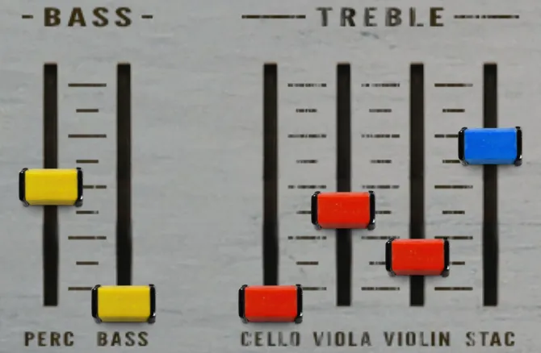
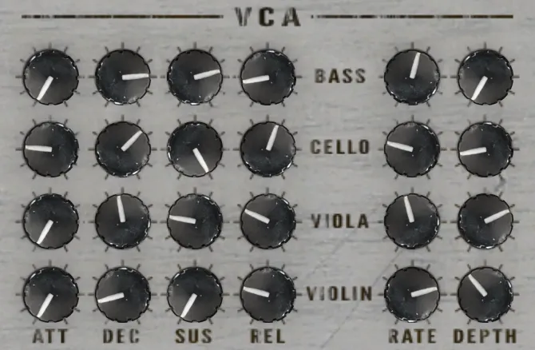
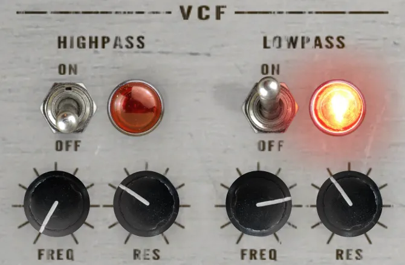
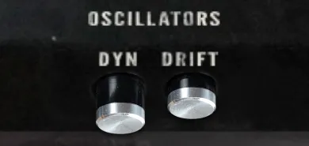
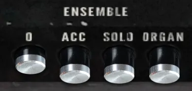
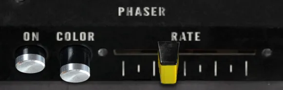
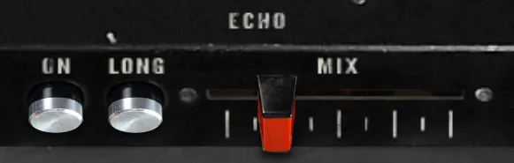
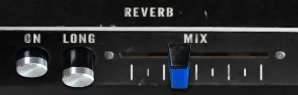

Video
A demonstration of the Strykebrett library for Decent Sampler.
String synthesizer sample plugin (Strykebrett) — Watch on YouTube
Included formats
- VST3 (macOS)
- AU (macOS)
- Standalone application (macOS)
- Decent Sampler (macOS, Windows and Linux)
The plugin version is currently released for macOS only. Windows and Linux versions are planned. Until then, the Decent Sampler version covers those platforms.
The plugin version
The plugin is a self-contained instrument, available as VST3, AU and Standalone. Samples, graphics and impulse responses are all embedded in the plugin itself, losslessly compressed, so there are no external files to install or locate.
The plugin has all the controls and features from the Decent Sampler version, including MIDI learn, the master volume fader with output meter, value readouts for the knobs and full DAW automation. On top of that, the plugin version adds:
- Drift wheels next to the pitch and modulation wheels, adding a subtle random pitch and volume drift to each voice.
- A velocity curve setting in the settings menu.
The Decent Sampler version
This version of Strykebrett is an instrument preset / sample library for Decent Sampler. If you're new to Decent Sampler, I recommend checking out this guide first.
Technical specification
| Sample rate | Bit depth | Channels | Number of files | File size | |
|---|---|---|---|---|---|
| Samples | 44.1 kHz | 24 bit | 1 (mono) | 121 | 171.7 MB |
| Impulse responses | 48 kHz | 24 bit | 2 (stereo) | 4 | 3.6 MB |
User Interface
The user interface offers precise control over every aspect of the instrument and effects. Explore parameters to refine your sound, including control over the six drawbars, envelope, amplitude modulation with LFOs, highpass and lowpass filters, velocity/dynamics, oscillator drifting, and the immersive effects of ensemble, phaser, echo and reverb.
Mixer (Bass / Treble)

Unleash the power of the six drawbars to shape your tone with precision. Each drawbar controls the amplitude of a specific octave or sound, offering you unparalleled control over the instrument's harmonic richness.
Voltage Controlled Amplifier (VCA)

ADSR Envelope
Shape your sound precisely with the Attack, Decay, Sustain, and Release parameters. Whether you desire a punchy, staccato tone or a smooth, lingering ambiance, the ADSR envelope allows you to tailor the dynamics to your liking.
- Attack
- Individual attack time of the amplitude envelope for four of the drawbars
- Decay
- Individual decay time of the amplitude envelope four of the drawbars
- Sustain
- Individual sustain level of the amplitude envelope four of the drawbars
- Release
- Individual release time of the amplitude envelope four of the drawbars
Low-frequency Oscillator (LFO)
The Rate and Depth knobs enable you to modulate the amplitude of four of the drawbars with the desired depth and rate using the Low-Frequency Oscillator (LFO), opening up a world of rhythmic possibilities. The LFOs for the treble section has a sine waveform for smooth transitions. The LFO for the bass section has a sawtooth waveform for a rhythmic effect.
- Rate
- LFO rate determines the speed at which the modulation occurs
- Depth
- Adjust the LFO depth to introduce subtle or pronounced variations in volume
Voltage Controlled Filter (VCF)

Strykebrett has a highpass filter and a lowpass filter. The highpass filter ranges from 20 Hz to 2000 Hz and the lowpass filter ranges from 200 Hz to 8000 Hz.
- On / Off
- Turns on or off the filter
- Freq
- Cutoff frequency for the filter
- Res
- Amount of resonance at cutoff frequency
Oscillators

- Dyn
- Turns on or off the velocity controlled amplitude
- Drift
- When enabled, each sample will have a slight pitch drift. The pitch drift for each sample is unique and independent. It's less pitch drift in the bass samples than the treble samples.
Ensemble

- O
- 3 stereo choruses with different speed and depth
- Acc
- Turns the ensemble off
- Solo
- Fast stereo vibrato
- Organ
- A slow stereo chorus
Effects
The phaser is a built-in effect. The echo and reverb effects are achieved using carefully crafted impulse responses. The echo effect employs a Fulltone Tube Tape Echo recorded twice for stereo, while the reverb effect draws from a Chase Bliss Audio & Meris CXM 1978 reverb pedal with a room setting.
Phaser

- On
- Turns the phaser on and off
- Color
- Adds more feedback to the phaser
- Rate
- Adjust the rate of the phaser modulation
Echo

Select from two distinctive echo options: the short echo, delivering a classic slapback effect, and the long echo, characterized by a slower decay and numerous repeats.
- On
- Turns the echo on and off
- Long
- Switches between a short slapback echo and a long echo with slow repeats and high feedback
- Mix
- Mix between direct signal and echo signal
Reverb

You'll also find two reverb effects: the short reverb, evoking the intimacy of a small room, and the long reverb, enveloping your sound in the vastness of a spacious environment.
- On
- Turns the reverb on and off
- Long
- Switches between a short/small room reverb and a long/big room reverb
- Mix
- Mix between direct signal and reverb signal
Release notes
Version 2.1.02026-08-01
The changes in this release apply to the plugin version only. The DecentSampler version is unchanged.
- Added a translucent overlay graphic on top of the interface.
- Keys that are hovered or held on the keyboard are now shaded in a neutral way instead of turning yellow:
- White keys turn darker.
- Black keys turn brighter.
- The computer keyboard keeps playing notes even while you adjust a control with the mouse.
Version 2.0.02026-07-19
- Added a plugin version. See the section "The plugin version".
- Adjusted the gain levels and the keyboard color.
- Fixed the value for the modulation wheel binding.
- The filters now use translation tables and the correct state names.
- Fixed the default value for the LFO.
- Effect bindings now use effectIndex.
- Removed wrong sampleRate attributes from the sample definitions.
Version 1.0.02023-10-16
- First version released
About this repository
This repository contains the source for both the Decent Sampler library (the DecentSampler folder) and the plugin version. The plugin is a thin wrapper around the shared Dehli Musikk sampler engine, and a converter translates the Decent Sampler library into the engine's native preset format at build time. The audio files are not part of this repository, since the samples are a paid product. The full version is available from store.dehlimusikk.no.